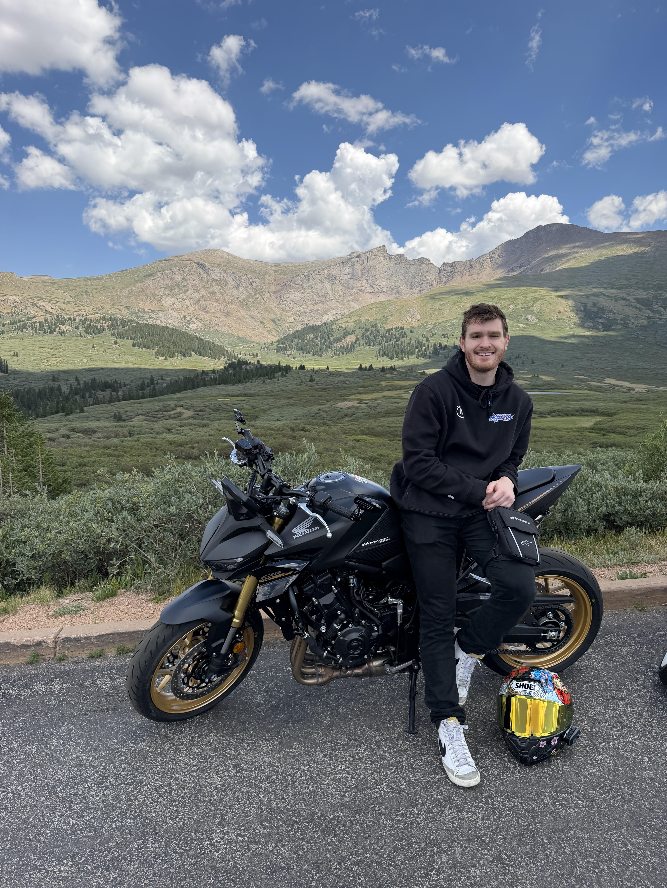

Linux & Network Systems Engineer
Austin Dachel
Infrastructure & automation → cloud & DevSecOps
I build and secure the infrastructure other engineers build on. From rack, to routing table, to runbook. Currently moving that background toward cloud security.

Career
Experience
Linux Systems Engineer · Bet365
July 2026 – Present- Manage and maintain enterprise Puppet infrastructure, with configuration tracked and deployed via Git.
- Administer Canonical Landscape for OS imaging and fleet management across end-user systems.
- Build and maintain AppArmor security profiles, enforced and version-controlled through Puppet.
- Maintain in-depth operational knowledge of Linux internals, including user and group management, file system management (LVM, RAID), and process management.
- Administer service management (systemd, SysVinit) and perform kernel tuning to optimize system performance and stability.
- Support virtualization (VMware vSphere, KVM) and containerization (Docker, Kubernetes) platforms
- Apply Linux security best practices, including SELinux, granular user permissions, SSH hardening, and vulnerability management.
- Monitor system health and availability using Nagios, Zabbix, Prometheus, Grafana, and Splunk.
Systems Engineer · Ateme
April 2023 – July 2026- Owned lab and systems infrastructure for a multi-rack broadcast and media environment spanning Fortinet, Cisco, FS, UniFi, and HPE hardware.
- Led a full network documentation and handoff project — runbooks, topology diagrams, and draw.io reference files covering the entire lab environment.
- Stood up a site-to-site IPsec VPN tunnel (Viamedia VSP 2200) from scratch, resolving PSK mismatches, RPF drops, and routing conflicts to reach confirmed bidirectional traffic.
- Replaced a manual Excel/Salesforce logistics workflow with a NocoDB-based inventory system built on a proper relational schema.
- Built an internal bare-metal provisioning tool (Ansible + Bash) with Redfish API integration across HPE, Dell, and Supermicro hardware.
Stack
Skills
systems: - linux administration - bash / scripting - server provisioning & imaging networking: - fortigate, cisco, unifi, fs - vpn & ipsec tunneling - dns, dhcp, vlans, routing automation: - ansible - puppet - terraform - docker - kubernetes cloud: - GCP Associate Cloud Engineer - GCP Professional Cloud Security Engineer (in progress)
Selected work
Projects
Bare-metal Provisioning Tool
Internal deployment tool automating OS provisioning across HPE, Dell, and Supermicro hardware via the Redfish API.
Site-to-Site IPsec Tunnel POC
Built a Viamedia VSP 2200 tunnel from scratch — debugged PSK mismatches, RPF drops, and routing conflicts to confirmed bidirectional FTP traffic.
NocoDB Inventory System
Replaced a manual Excel/Salesforce logistics workflow with a relational inventory schema for lab equipment tracking.
Network Documentation & Handoff
Full topology diagrams and operational runbooks for a multi-rack broadcast lab, built for a clean team handoff.
Background
Education
M.S., Cybersecurity & Information Assurance
B.S., Computer Information Systems
Get in touch